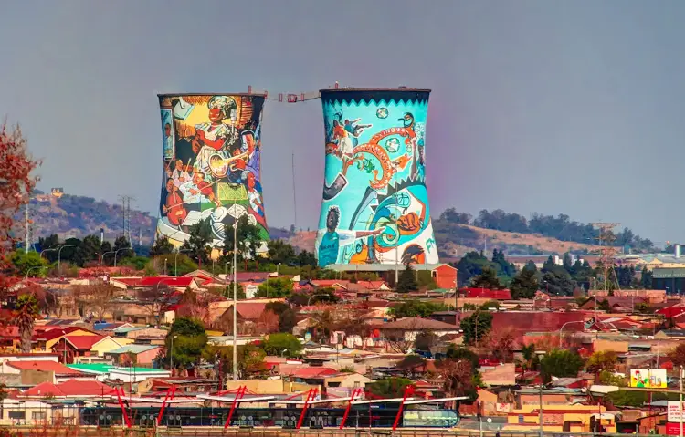
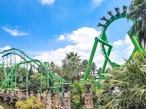
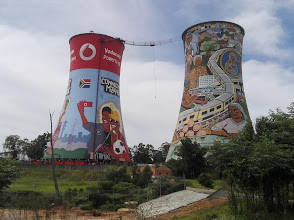
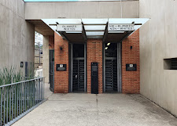

why Johannesburg??
Johannesburg, the city of gold
Johannesburg may not have centuries-old castles or a coastline, but its story is one of ambition, discovery and transformation. Born from the gold rush of 1886, the city grew from a small mining settlement into one of Africa's largest and most influential urban centres. Today, traces of that history can still be found alongside modern skyscrapers, vibrant neighbourhoods and bustling streets.
You can still discover the many layers of Johannesburg today. Beyond the shopping malls, stylish restaurants, coffee shops and contemporary art galleries, you can explore the historic streets of Soweto, visit Constitution Hill and the Apartheid Museum, or wander through neighbourhoods such as Maboneng and Braamfontein. From the city's golden mine dumps and busy streets to its leafy suburbs and spectacular Highveld sunsets, Johannesburg offers a glimpse into both the struggles that shaped South Africa and the energy of the country looking toward its future.
activities
My favorite things to do in Joburg

Goldreef
Get ready for an adventure like no other at Gold Reef City Theme Park, the largest theme park of its kind in South Africa and officially one of Johannesburg’s most loved and coolest entertainment destinations.
Address:
Northern Pkwy & Data Cres, Johannesburg, 2159
What i like about it
There is something amazing waiting for every guest. Feel the rush on 14 thrilling rides, laugh together on 9 family rides, let your little ones explore 20 dedicated kids rides, and bounce into fun at the incredible Jump City Trampoline Park.

Soweto Towers
The Soweto Towers (Orlando Towers) were originally built in 1951 as cooling towers for the coal-fired Orlando Power Station. After the power plant closed in 1998, they were repurposed into a vibrant public landmark, commercial billboard space, and an extreme sports adventure hub.
Address:
Chris Hani Rd, Klipspruit 318-Iq, Johannesburg, 1809
What i like about it
Both towers are painted, one functioning as an advertising billboard and the other containing the largest mural painting in South Africa. The towers are also used for bungee and BASE jumping from a platform between the top of the two towers as well as a bungee swing into one of the towers.

Apartheid museum
The Apartheid Museum opened in 2001 and is acknowledged as the pre-eminent museum in the world dealing with 20th century South Africa, at the heart of which is the apartheid story
Address:
Northern Parkway, Gold Reef Rd, Ormonde, Johannesburg South, 2001
What I like about it
An architectural consortium, comprising several leading architectural firms, conceptualised the design of the building on a seven-hectare stand. The museum is a superb example of design, space and landscape offering a unique experience